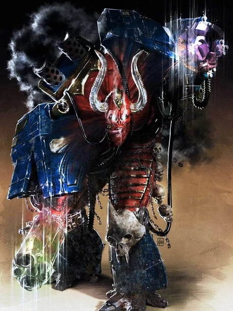

Invasion of Ultramar
| Invasion of Ultramar | |
|---|---|
| Chaos assault on the Ultramarines' realm, concurrent with the Thirteenth Black Crusade | |
 M'kar the Thrice-Born in his possessed Dreadnought shell Artwork © Games Workshop | |
| Date | 999.M41 |
| Location | Ultramar, Eastern Fringe; the agri-world of Tarentus, the ocean world of Talassar and Calth |
| Result | Imperial victory; M'kar destroyed, Honsou escaped |
| Belligerents | |
| Commanders and leaders | |
| † Killed in action (M'kar's essence annihilated) | |
| Strength | |
| Not recorded | Several Chaos Space Marines warbands, a daemonic host and rogue Imperial regiments (numbers not recorded) |
| Casualties and losses | |
| Not recorded | M'kar destroyed; the rest scattered |
The Invasion of Ultramar was an assault by the Chaos alliance called the Bloodborn on the Ultramarines' realm of Ultramar in 999.M41. It was led jointly by the Iron Warriors Warsmith Honsou and the Daemon Prince M'kar, both of whom had sworn vengeance on the Ultramarines. It ran at the same time as Abaddon the Despoiler's Thirteenth Black Crusade but was not part of it.[1]
The invasion failed. M'kar's essence was destroyed on Talassar by Marneus Calgar, and Honsou escaped.[2]
Background
[edit]M'kar was born Maloq Kartho, a Word Bearers Legionary who took part in the attack on Calth in the Horus Heresy and was killed there by the Ultramarine Remus Ventanus. The Dark Powers raised him as a daemon, and he became a determined enemy of the Ultramarines.[3]
In 878.M41 he led a Chaos pirate fleet against Ultramar, and was destroyed by a force under Captain Cato Sicarius of the 2nd Company. In 935.M41 he took the star fort Indomitable. Calgar boarded it and beat him, and the Ultramarines bound him to the fort's warp core so that each struggle tightened the bond. They hid this and told it as Calgar tearing him apart.[3]
In 997.M41 he turned the agri-world of Sondheim V into a daemonic pandemonium, and the Sky Sentinels called an Exterminatus there after Hive Fleet Leviathan arrived.[3]
Course of the invasion
[edit]In 999.M41 the Chief Librarian Varro Tigurius had a vision of Ultramar destroyed by an entity called the Thrice-Born. Honsou then found the secret of M'kar's prison, conquered the Indomitable and freed him as an ally in a new campaign.[3][2]
M'kar took the shell of a desecrated Dreadnought to stay in the material universe. He bound the Indomitable to a warp gate and called forth a daemonic host. With other Chaos forces under his command, he named it the Bloodborn. The elite warbands included the Skulltakers, the Apostles of MinthRas, the Claws of Lorek and the Death Shadows, and rogue Planetary Defence regiments joined them.[3][1]
Honsou's forces first struck the agri-world of Tarentus, where M'kar's daemonic host rose inside the cities and slaughtered the whole population. The Ultramarines answered, and in the capital, Axum, Honsou left a trap that nearly destroyed Captain Uriel Ventris and his 4th Company. The Chaos army then besieged Talassar, where M'kar took a share of the command and named the whole force the Bloodborn. Honsou went on to Calth to destroy the tomb of Remus Ventanus on M'kar's orders. Ventris and his Ultramarines beat him there, and he escaped.[2]
M'kar finally met Calgar on Talassar. Calgar struck him with the Shard of Erebus, the blade with which Ventanus had killed his mortal form on Calth, and his essence was annihilated.[3]
Aftermath
[edit]Honsou escaped and the Bloodborn broke up. The same year a larger Chaos assault on the realm came as part of the Thirteenth Black Crusade.[1][a]
Timeline
[edit]| Date | Event |
|---|---|
| 878.M41 | M'kar's pirate fleet is destroyed by Cato Sicarius |
| 935.M41 | M'kar bound to the Indomitable |
| 997.M41 | M'kar claims Sondheim V |
| 999.M41 | Tigurius's vision; Honsou frees M'kar; invasion of Ultramar; M'kar destroyed on Talassar |
See also
[edit]Notes
[edit]- ^ The Ultramar Campaign of the Thirteenth Black Crusade and this invasion are recorded as roughly concurrent in 999.M41. The records give no month for either.
References
[edit]- ^ a b c McNeill, Graham. The Chapter's Due (novel). Black Library; "Bloodborn". Warhammer 40k Wiki (Fandom).
- ^ a b c McNeill, Graham. The Chapter's Due (novel). Black Library.
- ^ a b c d e f Codex: Space Marines (5th edition). Games Workshop. p. 40; Codex: Blood Angels (5th edition), p. 16; Codex: Grey Knights (5th edition), pp. 14-17.